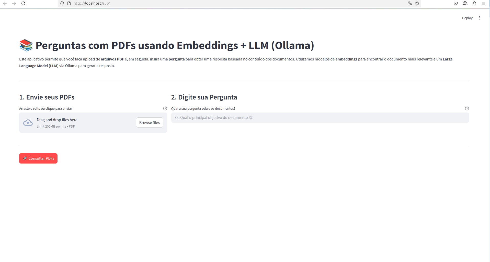
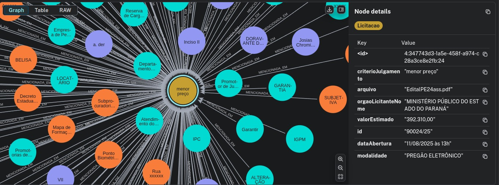
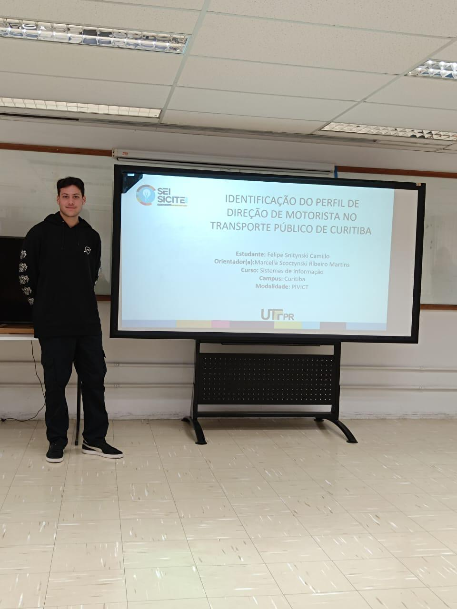
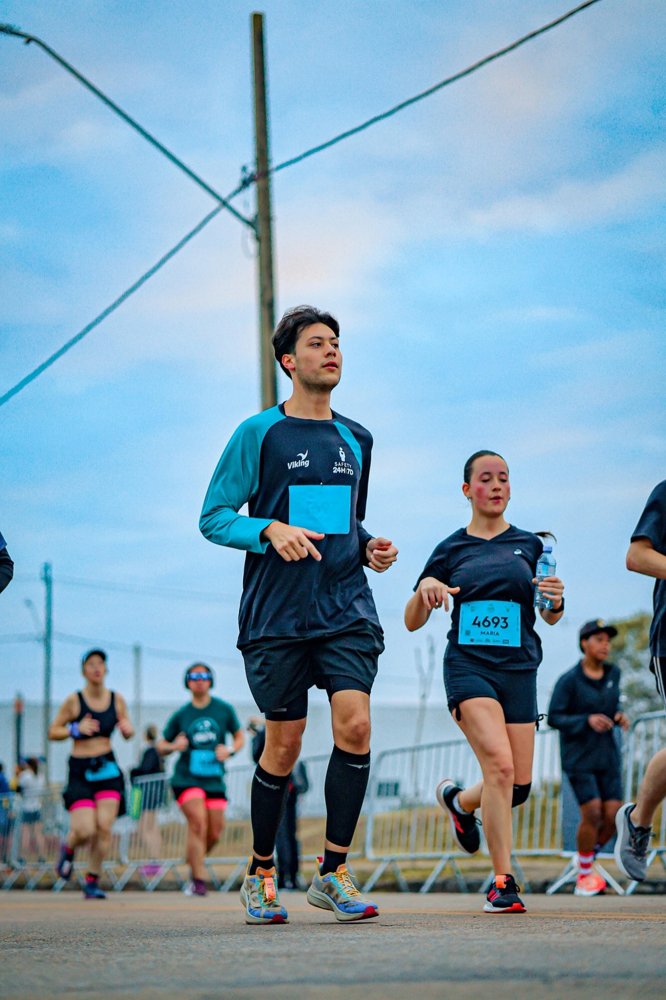

Projetos
Implementação de um sistema RAG para pós-graduação da UTFPR
Durante meu estágio na UTFPR tive a oportunidade de trabalhar com os programas de Pós-Graduação, auxiliando nos processos de coleta de dados e organização de informações dentro dos programas. Nesse período, pude notar a dificuldade que discentes e docentes enfrentam na hora de procurar algum regulamento dentre diversos documentos. Por exemplo, um dos programas possui quinze documentos entre regulamentos internos e externos. A partir desse problema, busquei desenvolver um sistema baseado em LLM restrito a documentos do setor para responder dúvidas do corpo acadêmico, visando simplificar o processo de busca de informações dentro dos programas.

Ver no GitHub
Estudo de caso: Extração de informações utilizando técnicas de Processamento de Linguagem Natural
Durante a implementação do sistema RAG para os programas de pós, surgiu uma grande dificuldade que me instigou a iniciar um projeto de Iniciação Científica na área de Processamento de Linguagem Natural. O problema foi: como extrair informações de centenas de arquivos com formatos diferentes? A proposta da IC foi buscar formas de extrair informações sobre licitações públicas e estruturá-las em um banco de dados para futuras análises. Como resultado, foi possível extrair e estruturar informações dentro de um banco de dados baseado em grafos, no modelo Objeto-Informação-Pessoa.

Ver no GitHub
Aplicação de Inteligência Computacional no contexto de Smart Cities
Esse projeto surgiu do meu interesse na área do urbanismo, buscando integrar urbanismo e sistemas de informação. Tive a oportunidade de aplicar algoritmos de Machine Learning para a análise de padrões no transporte urbano de Curitiba, visando localizar gargalos e lacunas no sistema. Como resultados, foi possível mapear áreas com mais atrasos na cidade, juntamente com a aplicação de regressão polinomial para prever atrasos com base na relação entre localização e histórico de atrasos.

Ver no GitHub
Participação no grupo de corrida Corre UTF
Há dois anos comecei a praticar atividades ao ar livre, mais especificamente corrida de rua. Nesse período, passei a participar do grupo de corrida da UTFPR, onde além de corrermos em equipe, participamos também de projetos sociais, como realizar corridas com pessoas com deficiência visual ou motora.
